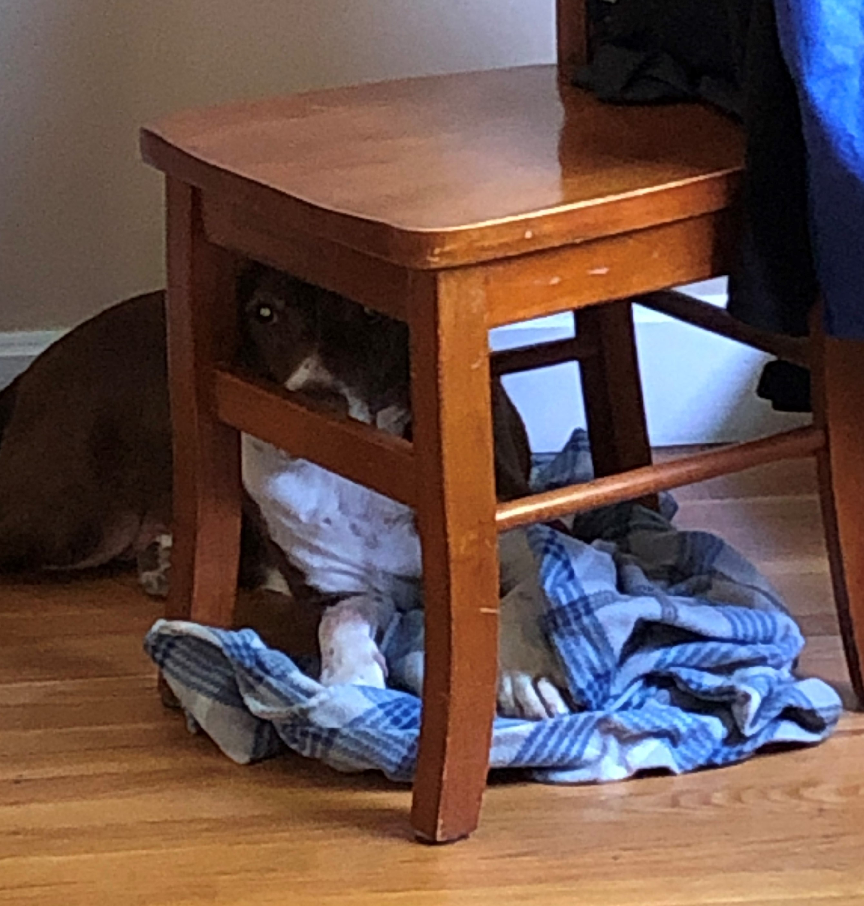

Sometimes, it’s better to leave hair styling to the professionals.
As a circus dog, it is imperative to have the trendiest hair styles.
This one is called “Mad scientist went for a swim.”
Hey Mazzie! Mazzie, did you see that?
The mailman thought he was sneaky, thought he'd pull one over on me.
Ha Ha but I caught'em in the act and I gave him a piece of my mind too!
This is Rue. She is my older sister.
I love her lots, but that's a secret - shhhhh.
Sir Reginald, of the Mudpuppies
Or just Reggie.
He claims to be a world traveler and tells tails of places like the Badlands and Wyoming.
Frado: What has you so down today, Mannie? Is it that you feel that you are not a ‘good boy’ even when the humans say so?
Me: Will you please go back downstairs? I want to drink from the water bowl.
Frado: (Clicks pen) And how does that make you feel?
This is Rue's favorite hiding spot.
I keep telling her that the point of the game is to not be found!
So maybe mix it up every now and then. Idk, just a suggestion.
Reggie, when he's not traveling the world.
The grass is always greener
That first day of summer.
The sun always coolest
The first morning before the heat.
Energy is all around us,
Helping us climb out of bed better
Earlier and swifter.
How good it feels,
To be alive on this perfect first day of summer.
Energy surges through us,
Eight little paws tap dance,
Sprint and hop.
How good it feels,
To be your’s or you to be our’s.
Bright summer mornings,
Just finished school,
Now done with our learnings
No more coats made of wool.
Please, Mom, can we
Go for a drive, visit the park?
If we could, we get on a knee
And beg, but we only bark.
Happy to be here,
With you and this season.
On four paws we’ll always be near,
Your devotion to us the reason.
Are you sure my teeth look fine?
I swear there’s a piece of carrot stuck in my front teeth.
Where are we going, Kallie? Can I have a toy now?
I’d really like it if I could have that cool, cloth backpack.
I don’t know if you know this, but I love cloth toys.
I love socks, and gloves, and all things made of soft materials.
Please, please, pretty please!
You know there is one thing I will never understand.
When I ask for yogart politely and my person just laughs at me.
It's like she doesn't believe me when I tell her that I didn't get any because Rue ate it all!
Mazzie says she was once a great beast that stomped on this Earth
toppling trees with her tail. Once she roared so loud it caused a rock slide!
But that was millions of years ago.
Explains her youthful and gregarious personality, lol
oh I crack myself up sometimes.
See, I've been an angel since day 1.
This is my sister giving me the puppy eyes because it's time for bed
and as my person says "I act like a two year old who fights sleep".

This guy.
People think pitbulls are big, bad dogs. That they're violent and unpredictable.
I’ll admit he looks hardcore with his shotgun leg, cougar ear, and bear lip
but Reggie, well, he's more likely to lick your face and beg to go on a walk than to attack.
Do I really need to say anything?
If there is one thing I have learned from Sir Reginald
it's how to appreciate a good soak.
Dog Bodies of Water: Reviews by Reggie T
This is a classic Kentucky creek. Very often spotted on hiking trails, in parks, and occasionally backyards.
I cannot denounce the Kentucky creek, it gets the job done.
However, this particular one is a little shallow, and the water moves slower than I prefer.
I give it two dog paws.
Just because I'm so adorable in this sweater.
Listen, we all have that one photo of ourselves we love to show people so zip it.
Ah, my favorite time of the year!
I love that I get to grow my hair out long and play in the snow.
I could play in the snow forever, it's just so much fun.
Rue on the other hand, well she's not a fan.
She doesn't like wearing clothes and
she most definitely doesn't like frozen paws.
You know once I played in the snow so much that I turned into a massive snowball!
No joke, maybe a slight over exaggeration, but whatever,
my person carried me in and gave me a warm bath.
Thankfully I survived but it was scary there for a minute.
It’s called fashion, look it up.
I’m practicing my vogue pose.